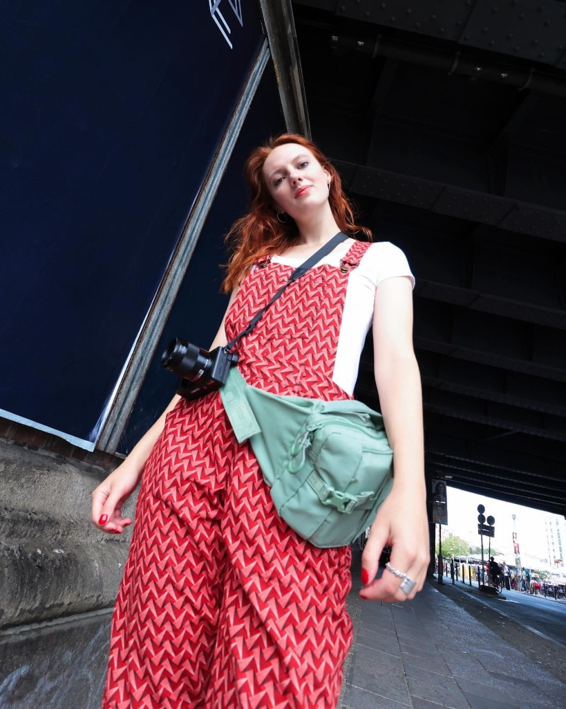

Video & Theatre Artist
Henrike Wiemann
Working across live performance, moving image and code.

About
Henrike Wiemann is a video and theatre artist working at the intersection of live performance, moving image and technology. Her practice has grown out of working across theatre, video production and directing, with a particular interest in bringing different visual and technical forms together within the live situation.
She holds a Master of Arts in Theatre Education from Berlin University of the Arts (UdK), where her research focused on the use of film on the theatre stage. Before and during her studies, she worked in different contexts across theatre and film — including productions at Puppentheater Halle, international collaborations with Plexus Polaire and Handspring Puppet Company, film production with IXA Berlin, and projects combining acting and videography with Line-Up Bühnenproduktion.
Henrike studied at the project-based programming school 42 Berlin. This extended her practice into software development, creative coding and real-time systems, allowing her to increasingly integrate programming directly into her work for the stage.
She has since worked across institutional theatre and the independent performing arts. Most recently, Henrike worked on the media staging and live video for Unter Tieren, a collaboration between the Burgtheater Vienna and the Salzburg Festival. For the production, she developed and programmed an AI-driven system that receives the play text as input, makes its own decisions about when and how to set cues, and sends these commands directly to the lighting, video and sound systems during the performance.
Her current practice brings together theatre, live video and programming, with a focus on how different expressive forms can coexist and influence one another in real time. Henrike works with tools including TouchDesigner, DaVinci Resolve, code and AI-based systems, and is currently preparing a collaboration with the performance group Interrobang.
Short Profile
Education
- MA Theatre Education
- 42 Berlin
- BA Speech Communication Science
Selected Collaborations
- Burgtheater Vienna
- Salzburg Festival
- Nico and the Navigators
- Interrobang
- Puppentheater Halle
- Plexus Polaire
- Handspring Puppet Company
- IXA Berlin
- Line-Up Bühnenproduktion
Working With
- Live Video
- TouchDesigner
- Creative Coding
- Real-Time Systems
- AI Systems
- DaVinci Resolve
- Video Production
Visual Archive
Practice
- LIVE PERFORMANCE
- MOVING IMAGE
- VIDEO
- CODE
- REAL-TIME SYSTEMS
- AI
- STAGE
- INTERDISCIPLINARY CREATION